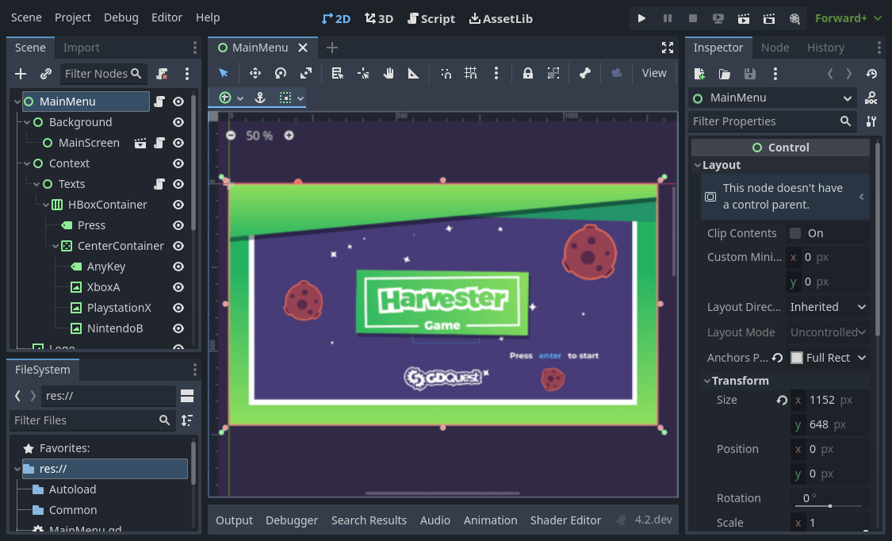
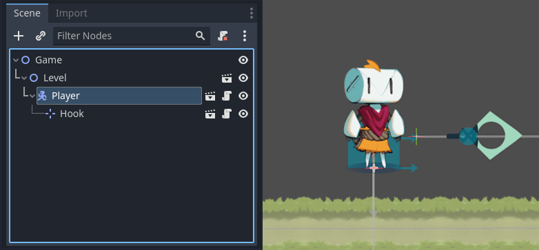
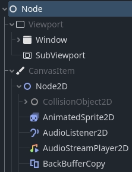

Tổng quan các khái niệm chính của Godot
Mọi game engine đều xoay quanh những khái niệm trừu tượng mà bạn dùng để xây dựng ứng dụng. Trong Godot, một game là một cây gồm các node mà bạn nhóm lại thành các scene. Sau đó bạn có thể kết nối các node này để chúng giao tiếp với nhau bằng signal.
Đây là bốn khái niệm bạn sẽ học ở đây. Chúng ta sẽ xem qua chúng một cách ngắn gọn để bạn hình dung engine hoạt động như thế nào. Trong loạt bài nhập môn, bạn sẽ được sử dụng chúng trong thực tế.
Scene
Trong Godot, bạn chia game thành các scene có thể tái sử dụng. Một scene có thể là một nhân vật, một vũ khí, một menu trong giao diện người dùng, một ngôi nhà, cả một màn chơi, hoặc bất cứ thứ gì bạn nghĩ ra. Scene của Godot rất linh hoạt; chúng đảm nhận vai trò của cả prefab lẫn scene trong một số game engine khác.

Bạn cũng có thể lồng các scene vào nhau. Ví dụ, bạn có thể đặt nhân vật vào một màn chơi, và kéo thả một scene làm con của nó.

Node
Một scene được tạo thành từ một hoặc nhiều node. Node là những khối xây dựng nhỏ nhất của game mà bạn sắp xếp thành cây. Đây là ví dụ về các node của một nhân vật.

Nó gồm một node CharacterBody2D tên là "Player", một Camera2D, một Sprite2D và một CollisionShape2D.
Ghi chú
Tên các node kết thúc bằng "2D" vì đây là một scene 2D. Các node 3D tương ứng có tên kết thúc bằng "3D". Lưu ý rằng các node "Spatial" giờ được gọi là "Node3D" kể từ Godot 4.
Hãy để ý rằng node và scene trông giống nhau trong trình chỉnh sửa. Khi bạn lưu một cây node thành scene, nó sẽ hiển thị như một node duy nhất, với cấu trúc bên trong được ẩn đi trong trình chỉnh sửa.
Godot cung cấp một thư viện phong phú các loại node cơ bản mà bạn có thể kết hợp và mở rộng để xây dựng những node mạnh mẽ hơn. Dù là 2D, 3D hay giao diện người dùng, bạn sẽ làm hầu hết mọi thứ với các node này.

Scene tree
Tất cả scene trong game của bạn kết hợp lại trong scene tree, đúng nghĩa đen là một cây các scene. Và vì scene là cây các node, scene tree cũng là một cây các node. Nhưng sẽ dễ hơn nếu bạn nghĩ về game theo các scene, vì chúng có thể đại diện cho nhân vật, vũ khí, cánh cửa hay giao diện người dùng.

Signal
Node phát ra signal khi có sự kiện nào đó xảy ra. Tính năng này cho phép bạn làm cho các node giao tiếp với nhau mà không cần gắn cứng chúng trong code. Nó mang lại cho bạn nhiều sự linh hoạt trong cách tổ chức scene.

Ghi chú
Signal là phiên bản của Godot cho mẫu observer. Bạn có thể đọc thêm về nó tại đây: https://gameprogrammingpatterns.com/observer.html
Ví dụ, nút bấm phát ra một signal khi được nhấn. Bạn có thể kết nối một đoạn code với signal này để nó chạy khi sự kiện xảy ra, chẳng hạn như bắt đầu game hoặc mở menu.
Các signal tích hợp sẵn khác có thể cho bạn biết khi hai đối tượng va chạm, khi một nhân vật hoặc quái vật đi vào một vùng nhất định, và nhiều hơn nữa. Bạn cũng có thể định nghĩa signal mới phù hợp với game của mình.
Tóm tắt
Node, scene, scene tree và signal là bốn khái niệm cốt lõi trong Godot mà bạn sẽ thao tác thường xuyên.
Node là những khối xây dựng nhỏ nhất của game. Bạn kết hợp chúng để tạo scene, rồi kết hợp và lồng các scene vào scene tree. Sau đó bạn có thể dùng signal để làm cho node phản ứng với sự kiện ở các node khác hoặc ở các nhánh khác của scene tree.
Sau phần tóm lược ngắn này, có lẽ bạn còn nhiều câu hỏi. Hãy kiên nhẫn, vì bạn sẽ tìm được nhiều câu trả lời xuyên suốt loạt bài Bắt đầu.